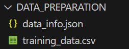

Surrogate Modeling / Usage¶
Basic Usage¶
Assume that the initial design data was created first, so training and information files are required.

Step 1: Initialize the Trainer
from PyEGRO.meta_trainer import MetaTraining
# Initialize with default settings
trainer = MetaTraining()
# Alternatively, you can specify files explicitly
trainer = MetaTraining(
data_info_file='data_info.json',
data_training_file='training_data.csv'
)
Step 2: Train the Model
Step 3: Make Predictions
# Input data for prediction
X_new = [[1.2, 3.4, 5.6]]
# Predict mean and standard deviation
mean, std = trainer.predict(X_new)
print(f"Predicted mean: {mean}, std: {std}")
Advanced Usage¶
Using Custom Data
# Custom training data
import numpy as np
def objective_function(x):
return x * np.sin(x)
# Generate custom data
X = np.linspace(0, 10, 100).reshape(-1, 1)
y = objective_function(X).flatten()
# Train with custom data
model, scaler_X, scaler_y = trainer.train(X, y, custom_data=True)
Load Model from File for Prediction
# Load a saved model for making predictions
from PyEGRO.meta_trainer import MetaTraining
# Initialize the trainer
trainer = MetaTraining()
# Load the saved model and scalers
trainer.load_model(model_dir='RESULT_MODEL_GPR')
# Make predictions using the loaded model
X_new = [[2.5], [3.0], [4.5]]
mean, std = trainer.predict(X_new)
print(f"Predicted means: {mean.flatten()}")
print(f"Uncertainties: {std.flatten()}")
Configuration Options of MetaTraining
MetaTraining Parameters:
- test_size: Train/test split ratio (default:
0.3) - num_iterations: Maximum training iterations (default:
100) - prefer_gpu: Use GPU when available (default:
True) - show_progress: Display progress bar (default:
True) - show_hardware_info: Show system details (default:
True) - show_model_info: Display model architecture (default:
True) - output_dir: Results directory (default:
'RESULT_MODEL_GPR') - data_dir: Input data directory (default:
'DATA_PREPARATION') - data_info_file: Path to data info JSON file (default:
None) - data_training_file: Path to training data CSV file (default:
None)
Full details can be displayed using the following command:
Full Configuration Usage
# Import the library and print usage
import PyEGRO.meta_trainer import MetaTraining
# Initialize the trainer with default configuration
trainer = MetaTraining()
# Alternatively, specify files explicitly
trainer = MetaTraining(
data_info_file='data_info.json',
data_training_file='training_data.csv'
)
# Train and evaluate with default data
model, scaler_X, scaler_y = trainer.train()
# Make predictions with a new input
X_new = [[2.0]]
mean, std = trainer.predict(X_new)
print(f"Predicted mean: {mean}, std: {std}")
Output Files
Saved Model:
- Model parameters and scalers are saved in the
RESULT_MODEL_GPRdirectory. - Files:
gpr_model.pth,scaler_X.pkl,scaler_y.pkl
Performance Plots:
- Training and testing performance plots are saved as
model_performance.png.